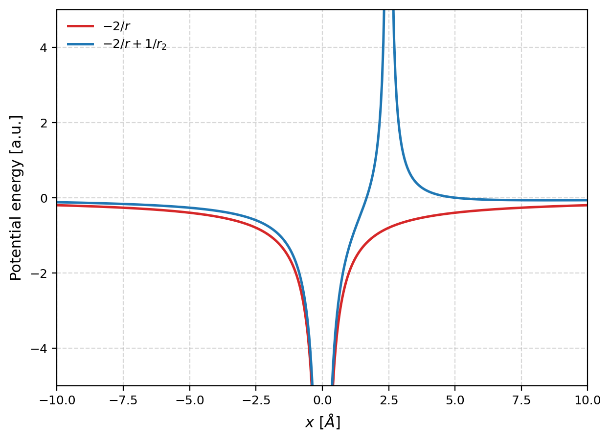
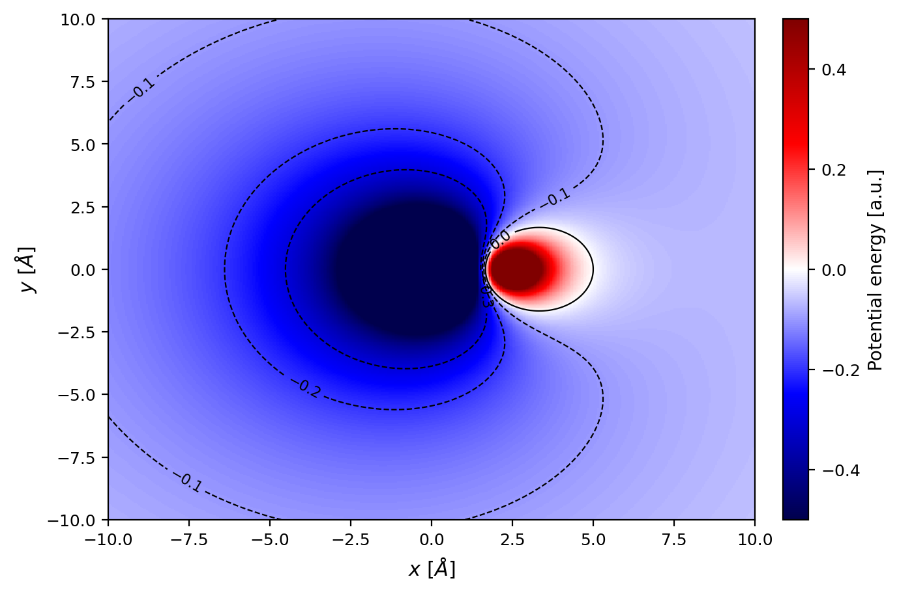

Physical Model
The helium atom represents the simplest multi-electron system where electron–electron interactions cannot be neglected. Unlike hydrogen, the Schrödinger equation is no longer analytically separable due to the Coulomb repulsion between the two electrons.
In this project, we visualize an effective one-electron potential obtained by fixing the position of the second electron. The resulting potential is given by:
V(r) = -Z / r + 1 / |r - r₂|
This simplified model allows us to isolate and study the structure of electron–electron interaction in real space.
Interpretation
The visualizations illustrate how the presence of a second electron modifies the effective potential experienced by the first electron.
- At large distances, the second electron has little influence and the potential approaches the pure Coulomb potential.
- As the second electron moves closer to the nucleus, the potential becomes increasingly distorted due to electron–electron repulsion.
- This effect can be interpreted as screening, where the nuclear charge is partially reduced by the presence of the second electron.
The 2D plots further highlight the anisotropy introduced by fixing the second electron at a specific position.
Why This Matters
Understanding electron–electron interaction is essential for describing real atomic systems. Even in helium, these interactions lead to measurable deviations from simple hydrogen-like behavior.
This visualization serves as a foundation for more advanced approaches, including:
- Numerical investigation of the electron–electron cusp condition
- Hylleraas-type wavefunctions with explicit correlation terms
- Variational approaches to the helium ground state
Methodology
- Construction of a 2D spatial grid
- Evaluation of Coulomb interaction terms
- Parametric variation of electron position
- Visualization using Matplotlib (1D and 2D slices)
- Animation via frame generation and video encoding